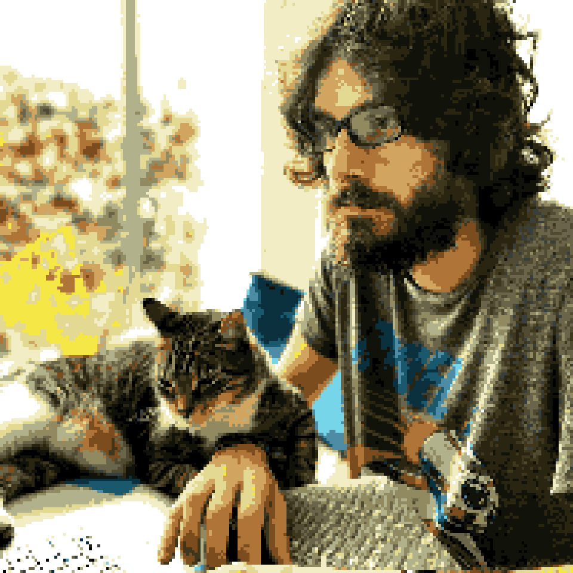
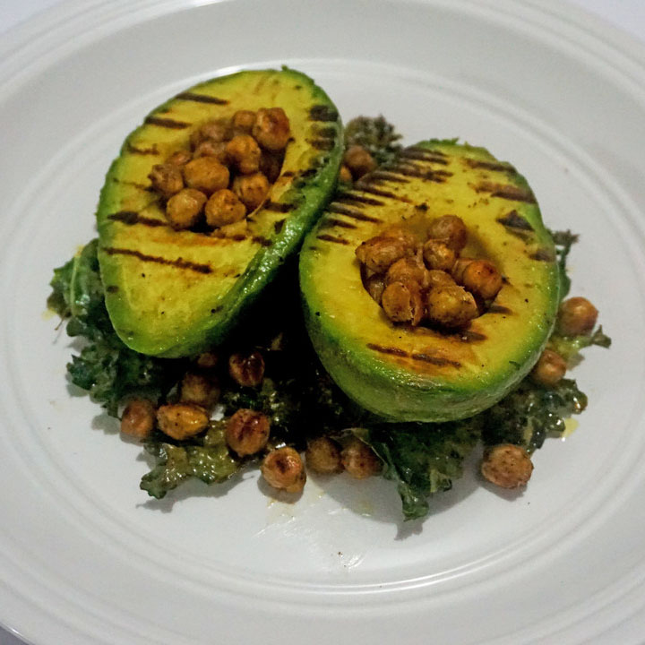
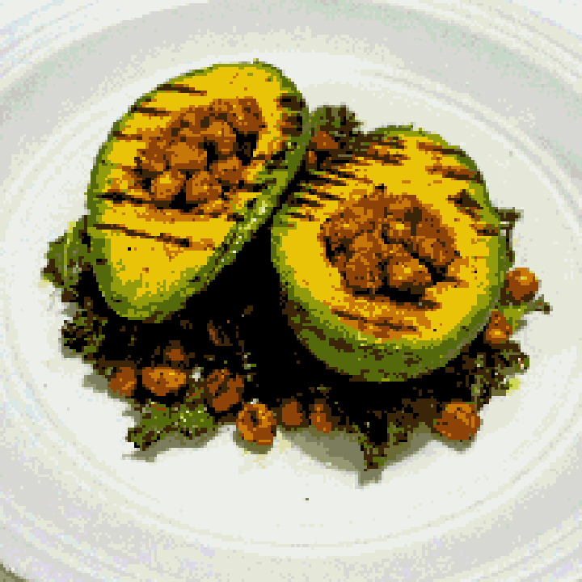

<ion-content [fullscreen]="true">
  <div id="container" [class.scroll]="allowScroll">
    <div class="bkg far" appParallax [ratio]="-0.5">

    </div>
    <div class="bkg middle" appParallax [ratio]="-0.25">

    </div>
    <div class="bkg foreground">

    </div>

    <ngx-typed-js *ngIf="typeStringIntro" class="section intro" [strings]="typeStringIntro" [cursorChar]="'_'" [typeSpeed]="30" (completed)="setAllowScroll(true)">
      <div class="typing"></div>
    </ngx-typed-js>

    <div *ngIf="showCoding && typeStringCoding" class="section coding">
      <div class="fade-img">
        
        
        <span><div>{{ 'PAGES.HOME.CODING_BUDDIES' | translate }}</div></span>
      </div>
      <br>
      <ngx-typed-js [strings]="typeStringCoding" [cursorChar]="'_'" [typeSpeed]="30" (completed)="setAllowScroll(true)">
        <div class="typing"></div>
      </ngx-typed-js>
      <br>
      <button (click)="goTo('work')">{{ 'PAGES.HOME.RESUME' | translate }}</button>
    </div>

    <div *ngIf="showRunning && typeStringRunning" class="section running">
      <div class="fade-img">
        
        
        <span>{{ 'PAGES.HOME.MARATHON' | translate }}</span>
      </div>
      <br>
      <ngx-typed-js [strings]="typeStringRunning" [cursorChar]="'_'" [typeSpeed]="30" (completed)="setAllowScroll(true)">
        <div class="typing"></div>
      </ngx-typed-js>
      <br>
      <button (click)="open('mailto:luiskcs89@gmail.com')">{{ 'PAGES.HOME.SUBSCRIBE' | translate }}</button>
    </div>

    <div *ngIf="showCooking && typeStringCooking" class="section cooking">
      <div class="fade-img">
        
        
        <span>{{ 'PAGES.HOME.FOOD' | translate }}</span>
      </div>
      <br>
      <ngx-typed-js [strings]="typeStringCooking" [cursorChar]="'_'" [typeSpeed]="30" (completed)="setAllowScroll(true)">
        <div class="typing"></div>
      </ngx-typed-js>
      <br>
      <button (click)="open('mailto:luiskcs89@gmail.com')">{{ 'PAGES.HOME.FOOD_PICS' | translate }}</button>
    </div>

    <ngx-typed-js *ngIf="showCredits && typeStringCredits" class="section credits" [strings]="typeStringCredits" [cursorChar]="'_'" [typeSpeed]="30" (completed)="setAllowScroll(true)">
      <div class="typing"></div>
    </ngx-typed-js>

    <div class="character idle-r" appCharacter></div>
    <div class="shadow"></div>
  </div>

  <button class="blue" (click)="runTo(0)"></button>

  <button class="green" (click)="runTo(2000)"></button>

  <button class="red" (click)="runTo(4000)"></button>

  <button class="yellow" (click)="runTo(6000)"></button>

  <div class="contact">
    <button class="mail" (click)="open('mailto:luiskcs89@gmail.com')"></button>
    <button class="linkedin" (click)="open('https://www.linkedin.com/in/luiskcs89/')"></button>
    <button class="github" (click)="open('https://github.com/luiskcs89')"></button>
  </div>
</ion-content>
